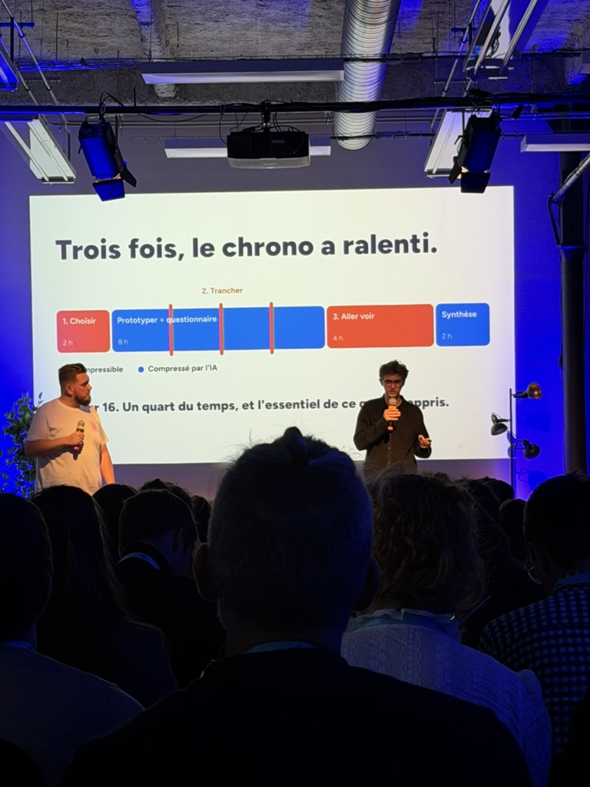
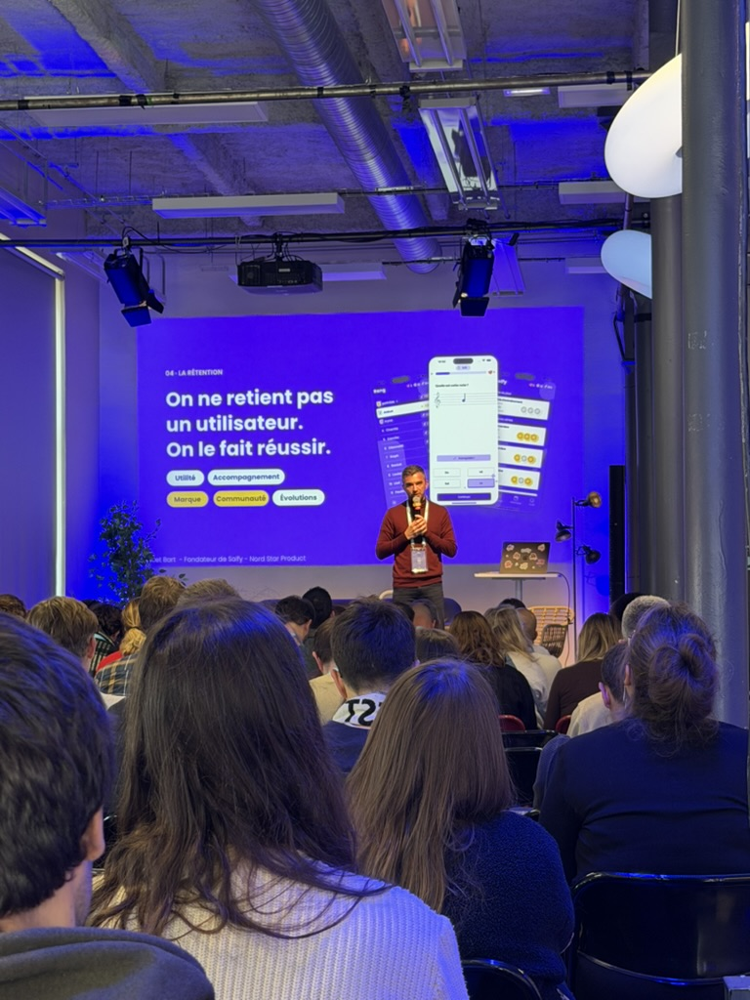

| 143 | │ | écrans générés en une semaine de lancement | |
| 150 | │ | pull requests par jour, vérifiées par la CI | |
| 80 % | │ | des écrans shippés après review | |
| 20 % | │ | ont révélé les trous du système | le plus de valeur |


| J1–3 | │ | Stratégie : friction humaine, l'IA dehors | ❌ |
| J4 | │ | Prototype : vibecoding à fond | ✅ |
| J5 | │ | Tests : de vrais humains, non négociable | ❌ |
| Après | │ | Analyse des tests avec l'IA | ✅ |